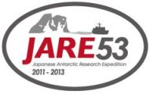

| 南極 ラングホブデ氷河 Langhovde Glacier, Antarctica | ||
| 2011-11-25 ~ 2012-03-19 | ※JARE53: 第53次日本南極地域観測隊 JARE52: 第52次日本南極地域観測隊 |
|
|

|
杉山慎 澤柿教伸 福田武博 樋口和生 白濱政典 小野口聡 清水大輔 杉本風子 奈良亘 篠塚和延 池田忠作 Anthony B. S. Euan S. |
(JARE53[一般研究観測] / 北海道大学 低温科学研究所) (JARE53[一般研究観測] / 北海道大学 環境科学研究科) (JARE53[夏隊同行者] / 北海道大学 低温科学研究所) (JARE52[野外観測支援] / 元北海道山岳活動サポート) (JARE53[機械] / いすゞ自動車株式会社) (JARE53[同行教員] / 仙台市立仙台高等学校) (JARE53[一般研究観測] / 北海道大学 低温科学研究所) (JARE53[夏隊同行者] / 北海道大学 低温科学研究所) (JARE53[野外観測支援] / 元株式会社ノマド) (JARE53[調理] / 株式会社ダイナック) (JARE53[気水圏変動のモニタリング] / 元筑波大学化学系) (JARE53[ヘリコプター] / Helicopter Resources Pty Ltd.) (JARE53[ヘリコプター] / Helicopter Resources Pty Ltd.) |
|
第53次日本南極地域観測隊に参加し、東南極・リュッツホルム湾に流れ込むラングホブデ氷河(写真1)において、約1か月間にわたる氷河観測を行った。この氷河は、日本の南極観測の拠点となる昭和基地から約20kmと非常に近くに位置しているにも関わらず、これまで雪氷調査が行われたことがない未踏の氷河である。
今回は、熱水掘削装置を用いた氷河全層掘削に挑戦した(写真2) 。氷河表面に流れる融解水を加熱・加圧することで熱水ジェットを作り出し、鉛直方向に氷を融かしながら掘り進める装置である(Tsutaki and Sugiyama, 2009)。過酷な輸送を経ることによる装置のトラブルに見舞われながらも、約10時間かけて400m程度の掘削を4回行った(写真3) 。カメラ観察や各種測器による計測の結果(写真4) 、氷河の下には10-25mの海水層が存在し、棚氷域の全層掘削に成功したことが明らかになった。掘削孔内には一部測器を残置し、2013年の回収の時まで観測データを記録しつづけている。
その他にも、氷河上を踏査する流動速度観測や氷厚探査を行った。氷河上には幅1mほどのクレバスがあるものの、ルートを選択すれば広範囲に行動することが可能であった(写真5) 。観測期間中は天候にも恵まれ、大きなブリザードに見舞われることもなく、無事に本計画の成功を収めることができた。 |
|
杉山講師のアルバムへ (Hot water drilling at Langhovde Glacier, East Antarctica) |
| 杉山講師の作成したムービークリップです。 |
|
|